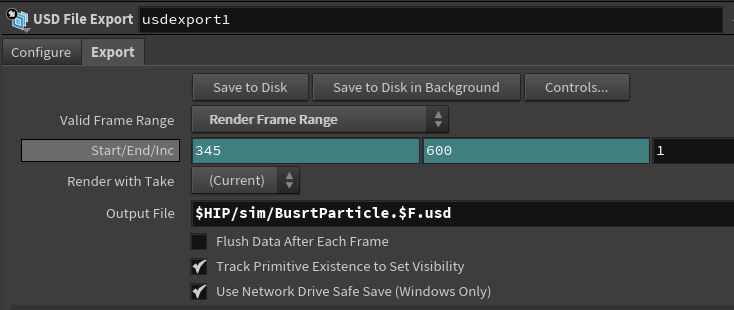
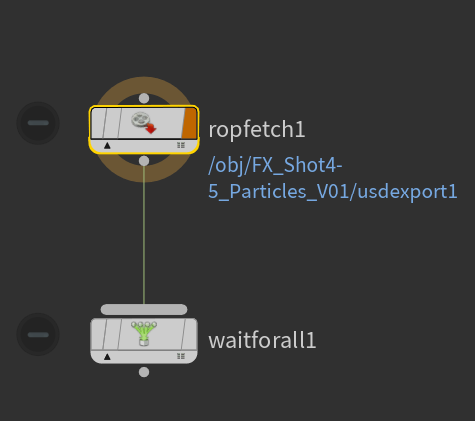
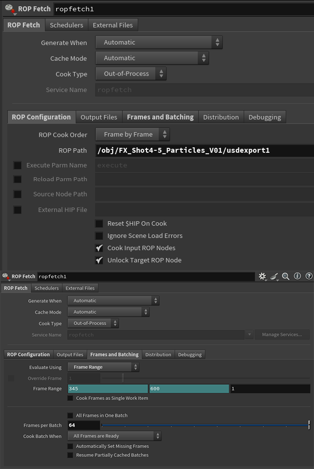
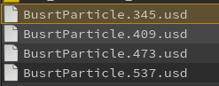
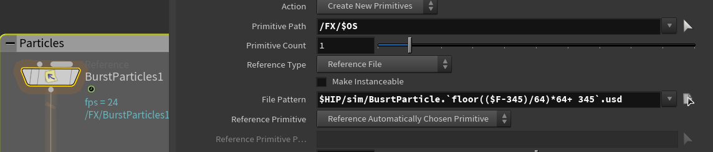

Week 07 - Fix Rendering Issue | Refine Lighting
Feb 17 - 23, 2026
Mentors Feedback and Suggestions
Particles are inconsistent across shots.
Shot 1: Ground effects should be much brighter around the printer
Shot 1-2: Particles are overexposed—color is blown out, needs grading.
Shot 3: Avoid keyframing; use time or age to drive changes like pscale and consider controlling pscale based on camera frustum
Shot 3: lighting change looks good, maintain that lighting throughout the shot
Shot 3: Particle color does not match the painting; currently too red in the center.
Shot 4: The disappearing particles happen twice and feel strange
Shot 4: Remove objects in Shot 4 for now and focus on refining the earlier shots first
Completed
Team Tasks
Shot 1: Add another layer of particles
Shot 3: Fix pscale, color and density of particles
Shot 4: Add particle from shot 4 at the beginning of the shot so it’ll look continue
Shot 3-4: Refined overall lighting
Shot 3: Refined custom height/displacement for the painting shot
Shot 3: Refined specular and roughness
shot 3: Render AOVS
Shot 4: Refined printer materials
Individual Tasks
Shot 3: Lighting on the particles
Fix rendering issue that caused inconsistent lighting
To-Do Lists
Team Tasks
Shot 1-2: printer internal lighting
Shot 2: Extend shot duration.
Shot 3: Refine particles
Shot 4: Printed materials for items in final shot
Render AOVs
Lighting adjustment
Refine printer Laser
Refine sound and add sound effects
Individual Tasks
Shot 3: Bevel the wood board
Shot 3: Trim the beginning of the shot slightly
Fix Rendering Issue in Shot Three
Problem: Some lights disappear in some frame
Hypothesis: USD hasn't been written out properly when there is so many particles
Solution: Cache the particles simulation out as USD files, then reference them back directly in Solaris

Name the cache files with frame number ($F)

Nodes setup in TOP Net

ROP Fetch settings - point ROP Path to USD Export node

Total simulation files output

In Solaris, use expression to read all USD files in one reference node.
When rendering,change to one cache file as a time to avoid broken animation (simulation will stop a the last frame of each sim file)
Refine Lighting
Adjust the scale of the light source according to the shot size (the wider, the bigger)